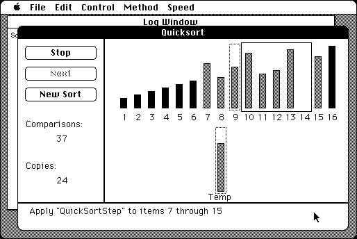

Download
xSortLab.zip (33K) xSortLab 1.1 repackaged into a zipped hfs disk image and checksum file. The disk image can be mounted with Mini vMac.
xSortLab.hqx (45K) xSortLab 1.1 in the original format.
copyright: David Eck
mod date: May 30, 1995
license: free for non-commercial use
official url :
Downloading TMCM Support Materials
Animated illustration of five sorting algorithms. Written to accompany computer science textbook.

If you find these downloads useful, please consider helping the Gryphel Project, which hosts them.
Here are the md5 checksums for the downloads, signed with Gryphel Key 5:
--------- GRY SIGNED TEXT --------- 00695df942a3112fa71292418f236b63 xSortLab.zip a4bc66557d8e4bd04b8fa1a992d2cfd5 xSortLab.hqx ------- BEGIN GRY SIGNATURE ------- Gry/4Xa8CFcUzxdN/ALc7/C+8+b5uLyCKeI/zeMk+bEHnZcVy2BKa7uJpqGvecV+ F5/Lm/YyfwL34npTOEVbU8lSgqmcHwVxg2Dh9rPnkiKgSPlrg6RLaMMXVT/5MLtY 1VqE0lKOZHAhd3MjW0E8NwThWlkoCToVG33UDoDGSLoiyX4O4PldqxGQcAyIW8eY -------- END GRY SIGNATURE --------